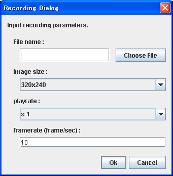
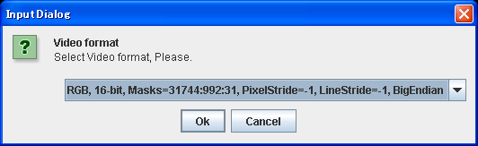
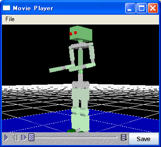

- go home of eye position button
A viewpoint is returned to a home position. br>
If it right-clicks, a menu will be displayed, and the present viewpoint can be set as a home position,
or can be returned to a default setup. A home position is saved at a project file.
-
Type select
Type of 3D View can be selected from the following.
- Room
- Walk
- Front
- Back
- Left
- Right
- Top
- Bottom
-
Rotation Mode button
Switches to Rotation Mode when clicked.
Drag the 3DView and rotate to move the viewpoint.
-
Zoom Mode button
Switches to Zoom Mode when clicked.
Drag the 3DView and zoom to move the viewpoint.
-
Pan Mode button
Switches to Pan Mode when clicked.
Drag the 3DView and move horizontally/vertically to move the viewpoint.
-
Polygon/Wire Frame button
Switches between Polygon and Wire Frame when clicked.
-
show/hide z=0 plane button
Switches between "show z=0 plane" and "hide z=0 plane" when clicked.
It controls whether to display the mesh at the position of Z-axis 0.
-
show/hide Collision button
Switches between "show Collision" and "hide Collision" when clicked.
It controls whether to display the collision-check vectors.
-
hide/show Distance button
Switches between "hide Distance" and "show Distance" when clicked.
It controls whether to display the minimum distance between collision-check pair.
-
nocheck/check Intersection button
Switches between "nocheck Intersection" and "check Intersection" when clicked.
It controls whether to display the collision checking between collision pair.
-
hide/show Center-of-Mass button
Switches between "hide Center-of-Mass" and "show Center-of-Mass" when clicked.
It controls whether to display the Center-of-Mass.
-
hide/show Center-of-Mass on floor button
Switches between "hide Center-of-Mass on floor" and "show Center-of-Mass on floor" when clicked.
It controls whether to display the projection of the Center-of-Mass on floor(the environment model).
-
set Background Color button
"Color settings" dialog box appears which allows you to select the background color.
-
Capture button
Save a snapshot of 3DView in PNG image format.
-
Record button
Start recording a movie of 3DView and saved in MOV video format.
Please be reminded to specify the file extension(.MOV) explictly.
Movies can be played using "QuickTime Player" or the "Movie Player" that described later.

Click "OK" and you will be proceeded to the Video Format selecting dialog box.

Click "OK" and the recording will be started from Log starting position.
Recording will be stopped when the log reach to the end or if you click the Record button again.
-
Movie player button
Starts Movie Player.

-
hide/show Vision Sensor button
Switches between "hide Vision Sensor" and "show Vision Sensor" when clicked.
Controls the vision if Vision Sensor is existed.
- The bounding box display button
For details, please look at the method of forming the form data of a model into a bounding box.
-
restore model properties button
Restore an item that previously converted to a model, to its original status.
-
Object Transelation button
Changes to Transelate Object mode when clicked.
If you click once again, it will return to view mode.
If you click a model, the selected model will be expressed as a green box, and moves in parallel by the drug of a mouse.
-
Object Rotation button
Changes to Rotate Object mode when clicked.
If you click once again, it will return to view mode.
If you click a model, the selected model will be expressed as a green box, and rotates by the drug of a mouse.
-
Joint Rotation button
Changes to Move Joint mode when clicked.
If you click once again, it will return to view mode.
If you click a link, the selected link is expressed as a red box, and rotates by the drug of a mouse.
-
Set Fitting Source button
Changes to Object Placement Select mode.
If you click once again, it will return to view mode.
If uou click the link which fits, a red arrow is displayed on the link.
-
Set Fitting Destination button
Changes to Object Placement Destination mode.
If you click once again, it will return to view mode.
If uou click the link which fits, a blue arrow is displayed on the link.
-
Fit button
Fits the objects that were set in (23)and (24).
-
Set From Joint button
Changes to Inverse Kinematics Base Link mode.
If you click once again, it will return to view mode.
If you click a base link, the selected link is expressed as a red box.
-
IK Rotation button
Changes to Inverse Kinematics Rotate mode.
If you click once again, it will return to view mode.
If you click a link, the selected link is expressed as a red box, and rotates by the drug of a mouse.
-
IK Translation button
Changes to Inverse Kinematics Translate mode.
If you click once again, it will return to view mode.
If you click a model, the selected model will be expressed as a red box, and moves in parallel by the drug of a mouse.
- The state of 3D view is displayed.
There are view mode and edit mode.
- You uses together with the (31) button and sets up the clipping distance of 3D view.
Clipping distance is the shortest distance from the viewpoint by which an object is drawn, and the longest distance.
The object besides this range is not drawn. Especially when you display a big object and a small object, please change if needed.